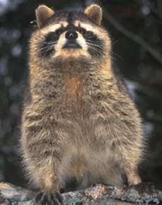
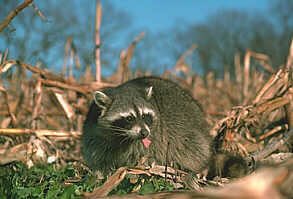

PROCIONE (COMMON RACCOON)

| Climate/Terrain | Foreste Temperate |
| Frequency | Uncommon |
| Organization | Solitario |
| Activity Cycle | Day |
| Diet | Onnivoro |
| Intelligence | Semi (2) |
| Treasure | Nessuno |
| Alignment | Neutral |
| No. Appearing | 1 |
| Armor Class | 6 |
| Movement | 12, Sw. 9, Cl. 6 |
| Hit Dice | 1/2 + 1 |
| Thac0 | 20 |
| No. of Attacks | 2 artigli e 1 morso |
| Damage / Attacks | 1/1/1d2 |
| Special Attacks | Nessuno |
| Special Defenses | Nessuno |
| Magic Resistance | Nessuna |
| Size | Small |
| Morale | Steady (12) |
| XP value | 8 |
Descrizione
La dimensione del procione ricorda quella della volpe. La lunghezza testa-corpo è di 40-70 cm e l’altezza alla spalla è di 23-35 cm. Il peso varia dai 4 ai 9 kg. La testa è rotonda e il muso allungato; le orecchie sono tondeggianti e bordate di bianco. La folta pelliccia del procione è caratterizzata da tonalità del grigio. Distintiva è la mascherina sul muso di colore nero e bordata di bianco. Le zampe presentano delle “dita” piuttosto lunghe provviste di artigli taglienti.
Combat
Il procione attacca con i suoi artigli affilati e mordendo la vittima. Questo animale è molto agile e si arrampica facilmente ottiene infatti la possibilità di scalare pareti pari al 75%. La sua agilità gli dona una buona classe armatura (ogni tiro su AC 7+ si considera completamente mancato).
Habitat/Society
I procioni conducono una vita solitaria. Il procione è una specie onnivora, che si adatta a qualsiasi disponibilità alimentare. Si nutre di frutta, ghiande, avena, mais, lombrichi, insetti, micromammiferi, uccelli e uova. E’ un ottimo scalatore e un eccezionale nuotatore. Il procione, prima di ingerire il cibo lo manipola ripetutamente con le zampe anteriori, dando l’impressione che desideri lavarlo, ciò gli è valso il nome di procione “lavatore”.
Ecology
L'orsetto lavatore può essere addomesticato facilmente (+1 a tutti i check di animal training). Stabilisce ottimi contatti con gli altri animali con cui viene a contatto, purché lo lascino tranquillo, al contrario non esita a battersi.
